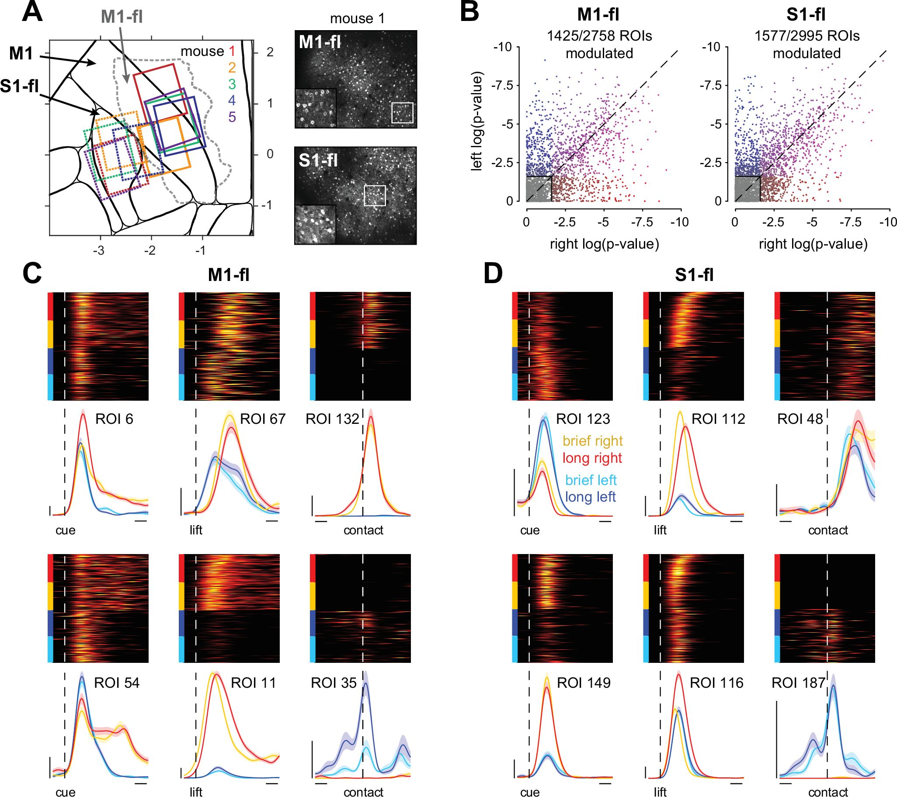
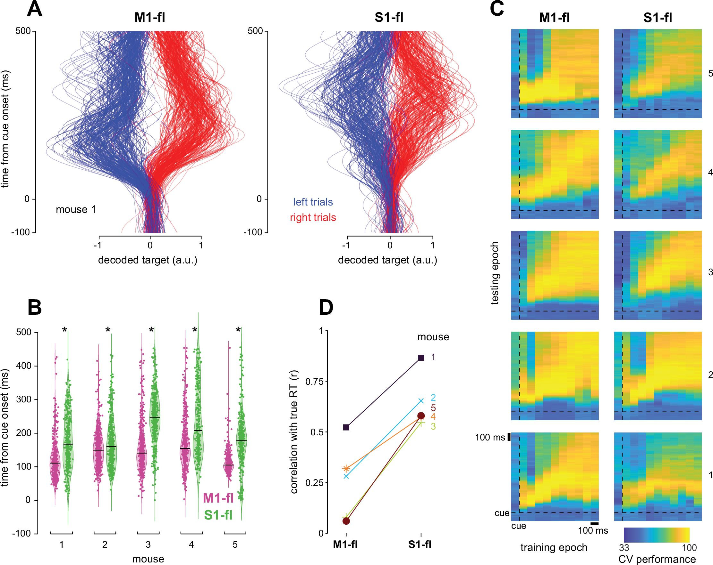
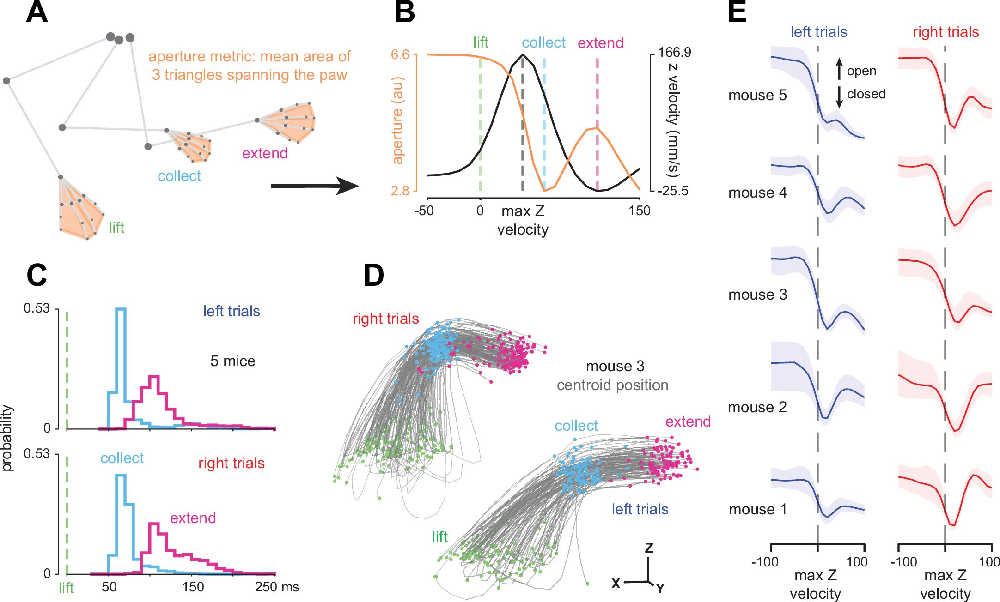

Sohrab Salimian
Ph.D
Neuroscientist. I build models that learn representations
in multimodal datasets.
Completed my PhD in Computational Neuroscience in the Kaufman lab at UChicago. My thesis focused on disentangling the structure of neural activity across the sensorimotor cortex. Recipient of the International Student Fellowship.
Interned at ARCH where I contributed to several white papers on the use of AI in drug discovery processes.

Completed my undergraduate studies at the University of Toronto, double majoring in Biology and Psychology. Post-bacc researcher under Richard Wildes, building interpretable convolutional neural networks. Recepient of Canada Research Excellence Fund Fellowship.



Placeholder — publication 1 title, authors, journal, year, and a brief description of the work will go here.


Placeholder — publication 2 title, authors, journal, year, and a brief description of the work will go here.